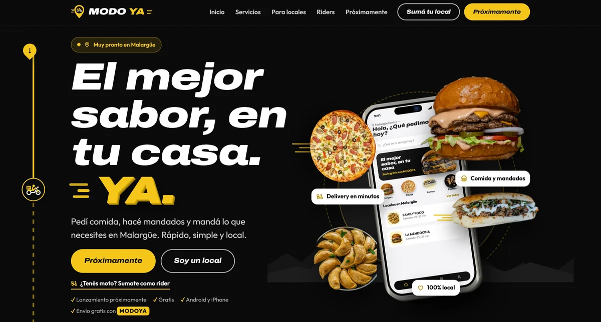
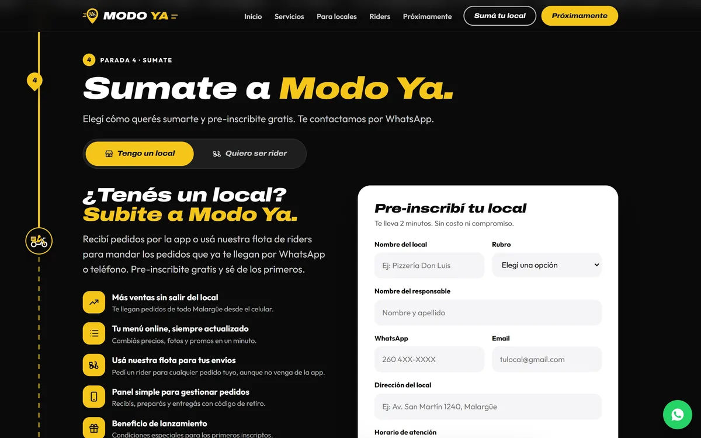

Digital marketplace
MODO YA
One order, four people who each need something different. The design work was making them agree.


Project overview
- Industry
- Local commerce and logistics
- Product
- Multi-sided marketplace: two apps and a launch site
- My role
- Product, UX/UI and development
- Responsibilities
- Requirements, roles and permissions, flows, UI and design system, launch site, pre-launch review
- Team
- Two people: Lucía Miranda and Álvaro González, at Codea Desarrollos, for a client in Malargüe
- Timeline
- September – October 2026
- Tools
- Flutter, Supabase, Mercado Pago
- Status
- Pre-launch. Builds run on Android and Windows; restaurants and riders can pre-register
App screens use sample data. The launch site is in Spanish because its audience is local.
In one minute
Problem
In Malargüe, restaurants sell over WhatsApp or the phone and each one solves delivery alone. Customers can’t see what is open, pay without cash or know where their order is.
Approach
I treated each order as a system with four roles. Two apps share one delivery engine, the server decides who is who, and every rule the client hadn’t settled became a setting instead of a guess.
Outcome
Two apps and a launch site on one design system, 15 builds in two months and a full review with 15 findings ranked by severity before opening to the public.
01The challenge
A town ready to order, with no app to do it.
The client wanted one local platform for two things: letting neighbors order from an app, and letting restaurants use a rider fleet for the orders they already receive by phone or WhatsApp.
Treating it as “a delivery app” would have solved the customer’s screen and left the other three people improvising. Each order passes through a customer, a restaurant, a rider and the admin team, and the account’s role decides which screens each one sees.
| Role | What they need | Where | How they join |
|---|---|---|---|
| Customer | Order food or an errand, pay without cash, track it live | MODO YA | Signs up alone |
| Restaurant | Receive orders, or request a rider for its own; update menu and prices quickly | MODO YA | Created by the admin team |
| Rider | Accept nearby deliveries and know how much to collect | MODO YA Rider | Created by the admin team |
| Admin | Approve accounts, set fees and oversee operations | MODO YA | Created manually |
Business goals
- One local platform for orders and for delivery
- Restaurants join without giving up WhatsApp
- Rules the client can change without a developer
Constraints
- A two-person team
- Background location for riders: the permission app stores scrutinize most
- Business rules still undefined when work began
02Research & discovery
Ask first about what is most expensive to change.
Before building, every open question went to the client in one document, ranked by how much it blocked.
First came the ones that change how the product is built: is delivery paid in cash or digitally? Which documents does a rider need? What happens to a canceled order? Then the numbers that could be tuned later from the panel. Each question explained why it mattered and compared the options, so the client decided first on what was hardest to undo.
Evidence
What was known
- Restaurants already sell by WhatsApp and phone
- Each one handles delivery however it can
- Stores are likely to reject background location inside a customer app
Assumptions
What was designed as a hypothesis
- Restaurants won’t drop WhatsApp for a new app
- Seeing time and delivery cost early helps people choose
- A proof of delivery prevents disputes
Still open
What real use has to confirm
- How long riders take to accept a delivery
- The right search radius and per-kilometer fee
- Behavior with real orders: the platform is in pre-launch
03User journeys & flows
Four people in every order.
- AdminBeforeApproves accounts, sets fees and search radius
- 1CustomerBuilds the orderTime and delivery fee visible from the first list
- 2CustomerConfirms and paysAddress and payment on one screen
- 3RestaurantPrepares itOrder states update for everyone
- RestaurantSecond way inRequests a rider for an order that came by WhatsApp
- 4RiderAccepts a nearby deliveryKnows how much to collect
- RestaurantHands it overWith a pickup code
- 5RiderOn the wayVisible on the customer’s map
- CustomerFollows it liveFour clear states
- 6CustomerGives the 4-digit codeThen rates the delivery
- RiderCloses the deliveryOnly with the code
- AdminDuringOversees the operation
When something goes wrong
Most of the trust in a delivery product is won or lost outside the ideal path. These are the situations the design had to answer, and the gaps the review found.
| Situation | Answer | State |
|---|---|---|
| It says delivered, but it never arrived | The rider can only close the order with the customer’s code | Designed |
| Nobody accepts a delivery | Search radius and time to accept change from the panel, without a new version | Configurable |
| Someone registers as a restaurant or admin | The role comes from the server, never from the sign-up form | Designed |
| The customer picks bank transfer | The app promised to send an alias that no screen showed | Found in review |
| The network drops on the admin dashboard | It showed zeros and a green banner, with no error | Found in review |
| One to three digits in the delivery code | “Confirm” looked active and did nothing | Found in review |
I rebuilt that last one, with all its states, on the home page.
04Design exploration
The alternatives we discarded, and what each choice cost.
Problem
One app for everyone?
Riders need location in the background. Inside a customer app, publication would most likely be rejected.
Decision
Two apps on one system
MODO YA for customers, restaurants and admins; MODO YA Rider on its own. Design system and logic live in shared packages.
What it cost: two builds to publish and keep in step.
Problem
App orders only?
Asking restaurants to leave the channels they already sell through meant losing them.
Decision
Marketplace and courier on one engine
A restaurant receives in-app orders or requests a rider for an order that came from elsewhere. Both use the same assignment by proximity.
Problem
Who confirms that it arrived?
Without proof, a “delivered” order that never arrived ends in an argument.
Decision
A code at each handover
A pickup code between restaurant and rider, and a 4-digit code between customer and rider.
What it cost: one more step at the door.
Problem
Let people choose their role?
Anyone could claim to be a restaurant or an admin and see what isn’t theirs.
Decision
The server assigns it
Customers sign up alone. Restaurants and riders receive generated credentials from the admin team.
What it cost: restaurants and riders can’t register on their own.
Problem
Guess the missing numbers?
Fee per kilometer, search radius and time to accept hadn’t been decided.
Decision
Everything configurable
The values change from the panel. The extra-kilometer fee started at $0 on purpose, to avoid inventing a charge nobody had defined.
What it cost: more settings to explain to the admin team.
05Design system
Black, yellow and an order in plain sight.
The redesign moved the brand identity into tokens, so the two apps and the site could change together.
Color
- Yellow
#F5C518 - Yellow, hover
#FFD84A - Pale yellow
#FFF3C4 - Black
#0A0A0A - Surface
#1E1E1E - Gray
#F4F4F6 - Error
#D93A2B - Success
#1E9E5A
Contrast audit
| Pair | Sample | Ratio | Result |
|---|---|---|---|
| Yellow on black | 12.14:1 | AAA | |
| Black on yellow (buttons) | 12.14:1 | AAA | |
| Gray text on white | 6.70:1 | AA | |
| Error on white | 4.57:1 | AA | |
| Success on white | 3.45:1 | Large text and icons only To darken for text |
Rules that keep it consistent
- Yellow carries actions, prices and progress; everything else stays in grays
- One primary button per step, at the bottom of the screen
- The same four order states in both apps: confirmed, preparing, on the way, delivered
- Every line of copy needs a flow behind it that delivers what it says
06Final solution
From opening the app to knowing who is at the door.

Choose Time and delivery cost before opening a menu. 
Build Quantities, a note and the total in view. 
Pay Address and payment together, summary below. 
Confirm A full screen, not a message that disappears. 
Track State, map and the rider, with a way to contact them.

Payments
Card inside the app with Mercado Pago, bank transfer or cash.
MODO YA Plus
Monthly subscription with free delivery that renews itself and is canceled with one tap.
Notifications
Push messages, a different sound per role and abandoned-cart reminders.
Errands
A customer can also request a rider to drop off or pick up something.
A launch site you travel like a delivery
The site speaks to three audiences: neighbors, restaurants and people with a motorbike. It is organized as a rider’s route: a dashed line follows the scroll and each section is a stop.





07Implementation & collaboration
Two people, one pipeline, one list of findings.
Design and development shared the same source: tokens and components in common packages, and access rules in the database.
- Each new version is published automatically from the repository, and the apps update themselves on Android and Windows
- 55 database migrations, with permissions defined per role
- Before launch we went through the whole app looking for gaps between what the screens say and what the system can do: 15 findings, ranked by severity
What is unfinished is rarely half-written code. It is the gap between what a screen promises and what the system does.
08Outcomes & impact
What can be verified today.
- 2 + 1apps and a launch site on one design system
- 4roles with their own screens and permissions
- 15builds released between September and October 2026
- 15review findings ranked by severity before launch
Orders, delivery times and retention aren’t here because the platform hasn’t opened to the public. They are the first thing to measure.
09Learnings & next steps
What I would do earlier next time.
Learnings
- A marketplace has four users, not one: every decision is checked from the four sides
- Ranking questions by how much they block moved the client to decide first on what was most expensive to change
- I would run the screen-versus-system review at each milestone, not only before launch
Next steps
- Close the remaining findings, starting with high severity
- Measure how long riders take to accept and tune the search radius
- Add screens for complaints and for riders and restaurants to see their payouts